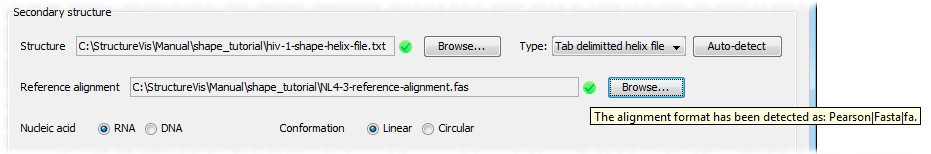

This tutorial will guide you through the process of creating a StructureVis dataset using the HIV-1 SHAPE data. The bolded text are the minimum instructions necessary to complete the tutorial.
All files used in this tutorial are located in the 'shape_tutorial' directory of your StructureVis directory (i.e. /your_structure_vis_directory/Manual/shape_tutorial).
Click on the 'Browse' button located next to the 'Structure' field, navigate to the 'shape_tutorial' directory and select the file named 'hiv-1-shape-helix-file.txt'. This file represents the secondary structure of an entire HIV-1 genome, as determined by a SHAPE experiment.
Press 'Auto-detect'. Once you have specified the file, you must specify the file type, in the case of the HIV-1 secondary structure data the file type is tab-delimitted helix. You can specify the file type in two ways, by selecting the type from the drop-down menu or by clicking 'Auto-detect'.
A reference nucleotide alignment is an alignment file that is used to map data to a the secondary structure that you have specified. It is very important that the reference nucleotide alignment is specified correctly, otherwise all subsequent data will be mapped incorrectly to the structure.
The reference nucleotide consists of a sequence (or sequences) where every column of the alignment corresponds exactly to every nucleotide of the secondary structure. Usually the secondary structure of a particular genome will have a corresponding sequence or nucleotide alignment, so most of the time you can just use this.

Select the reference alignment by browsing to the NL4-3 sequence file in the tutorial directory (../shape_tutorial/NL4-3-shape-alignment.fas). In the case of the HIV-1 SHAPE analysis used here, the NL4-3 HIV-1 RNA genome sequence was used, we have manually edited the provided alignment for you by truncating the ends so that it corresponds precisely to the coordinates specified in the structure file. Unfortunately, this is not immediately obvious by looking at the structure file that you specified in step 2.1, however, if you inspect the SHAPE reactivities file (../shape_tutorial/hiv-1-shape-reactivities.txt) which corresponds to the structure you will see that the sequence in the second column is precisely the same as the sequence in the alignment file.
Substructures are individual regions of the structure that are viewable in the 'Substructure' view. Instead of having the user manually generate a list of substructures to be viewed, StructureVis can automatically generate a list of substructures with a user-specified minimum and maximum size. Using the default sizes is generally okay. Click next.
Sequence annotations provide a way of visualising the genome organisation of a particular organism or the annotations of a sequence and an additional way to navigate through the structures contained within a sequence. Click 'Add annotations fron a Genbank file and map' and select the file named 'pNL4-3.gb' (This may take a few seconds). Now select a few annotations (for this example choose whichever ones you like) listed in the table in the upper panel by ticking in the 'Use' column, these will be displayed in the sequence annotations panel below. StructureVis will use the sequence contained within the Genbank file to map these annotations against the reference alignment (notice how the 'Start' and 'End' coordinates from the Genbank file differ dramatically from the 'Mapped start' and 'Mapped end' coordinates). You can change the colours of the annotations by clicking the rectangles in the upper panel and the height at the which they appear by changing the 'Level' column.

Data overlays are pieces of data that can be overlayed on the genomic secondary structure. In this tutorial we will add a 1D data overlay, this type of overlay is a list of nucleotide positions and a corresponding data values. Adding a 1D overlay colours the nucleotides of the secondary structure according to their correponding data values.
Once you have completed the data overlays section click next, this will take you to the last panel which will finalize the creation of your dataset, any errors that occur during this process will be displayed on this panel and you will be able to go back in the wizard in order to rectify them.